Audio adversarial purification demo
Positive-Incentive Noise Predictor
Listen to two anonymized utterances under 50-step MI-FGSM and compare
online purification outputs with matched spectrogram thumbnails. All
purified samples are generated from the attacked adversarial utterance,
not from the clean reference.
Paper
Code
Sample 01
Reference, attack, and purification outputs
Reference
Clean
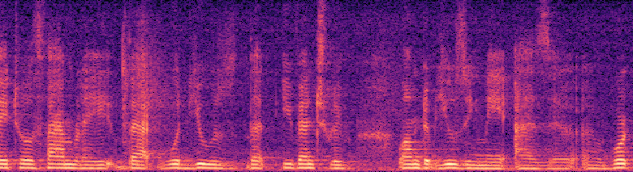
Attacked / No defender
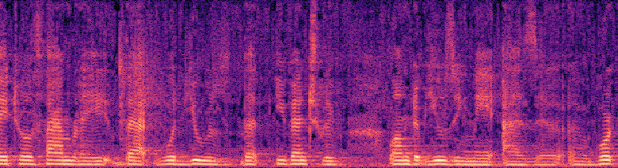
Proposed PnP purifiers
PnP-Diff
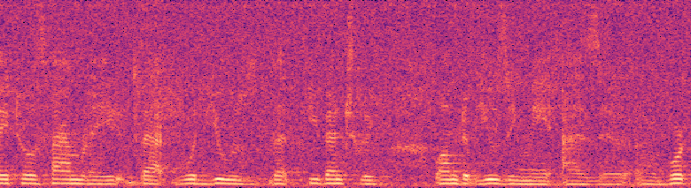
PnP-Diff-2
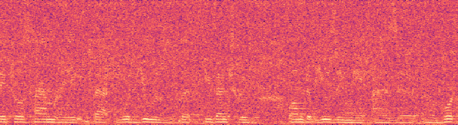
PnP-Diff + AudioPure
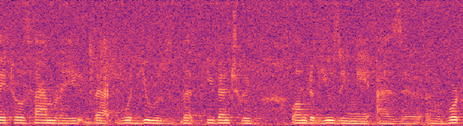
PnP-Diff + DiffWavePnP
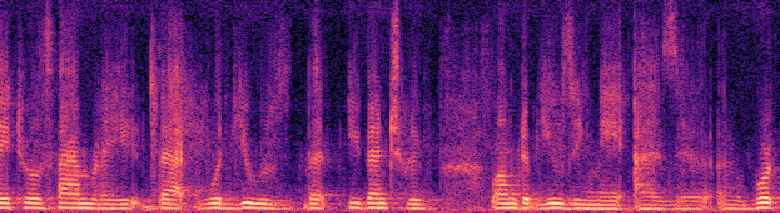
Baseline purifiers
DAP
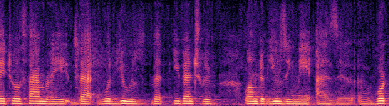
AudioPure
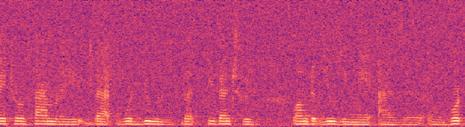
AudioPure+SSNI
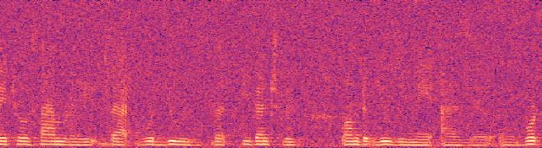
Noise-0.005
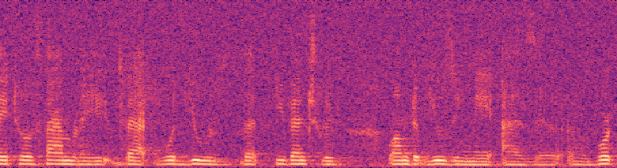
Noise-0.01
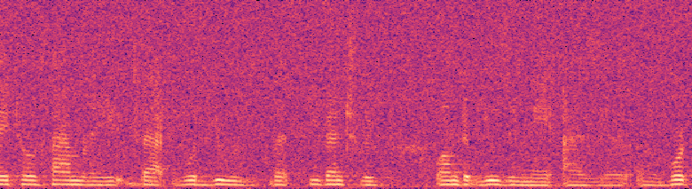
Noise-0.02
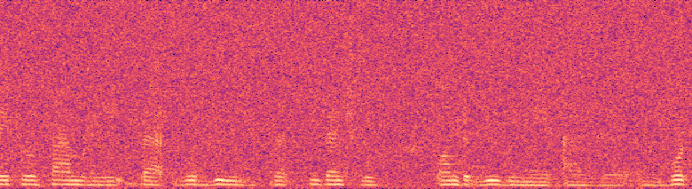
SpeechTokenizer
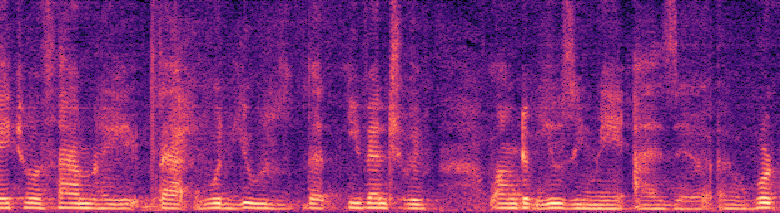
DAC
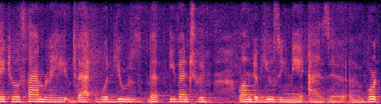
AcademiCodec
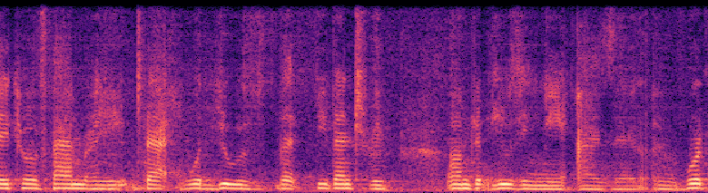
Additional PnP variant
PnP-Gaussian
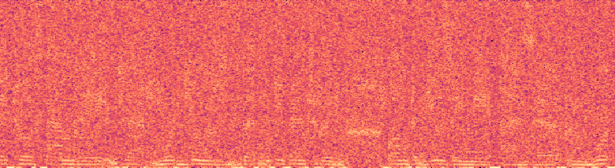
Sample 02
Reference, attack, and purification outputs
Reference
Clean
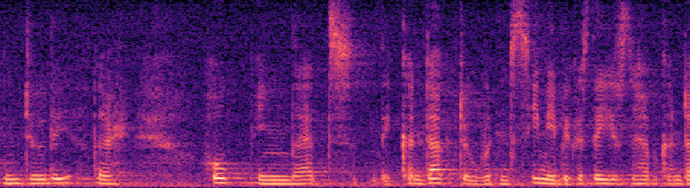
Attacked / No defender
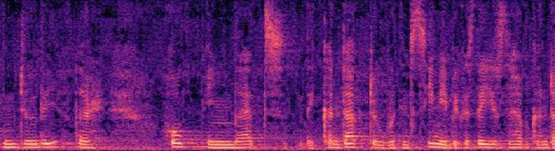
Proposed PnP purifiers
PnP-Diff
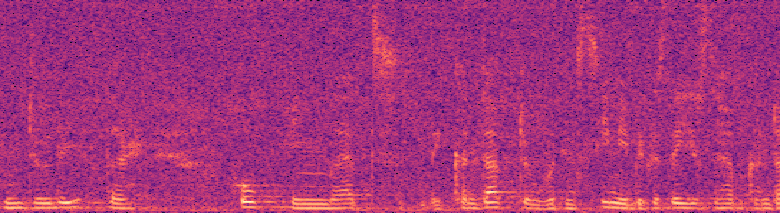
PnP-Diff-2
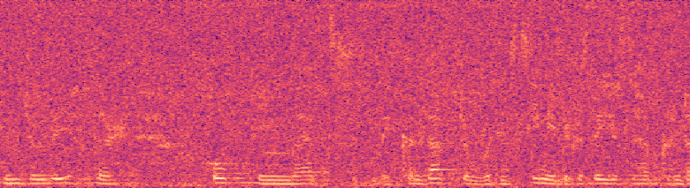
PnP-Diff + AudioPure
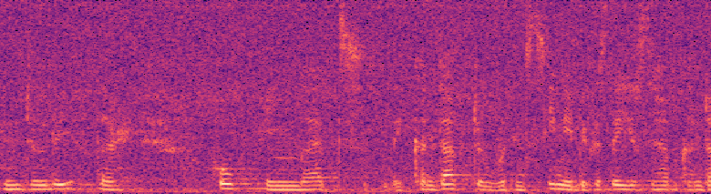
PnP-Diff + DiffWavePnP
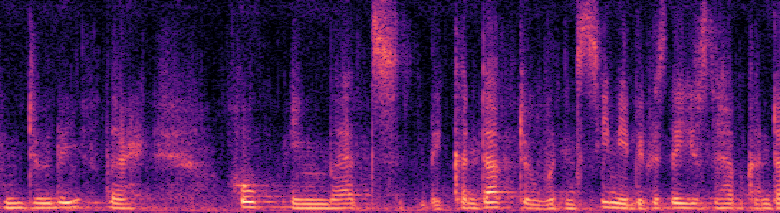
Baseline purifiers
DAP
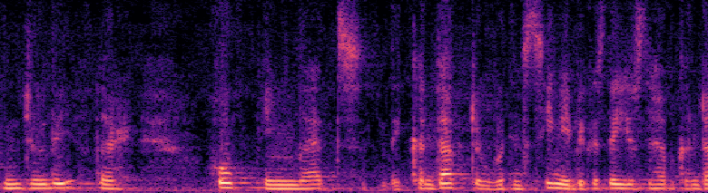
AudioPure
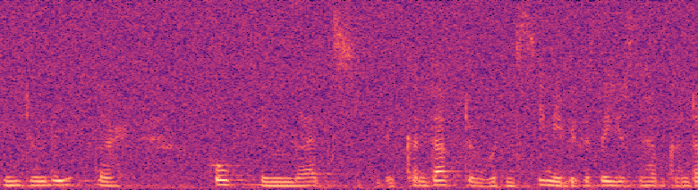
AudioPure+SSNI
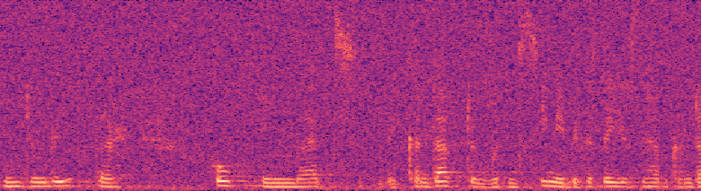
Noise-0.005
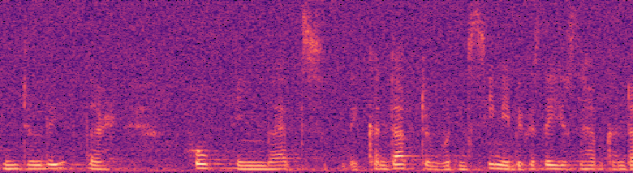
Noise-0.01
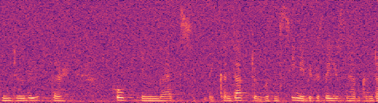
Noise-0.02
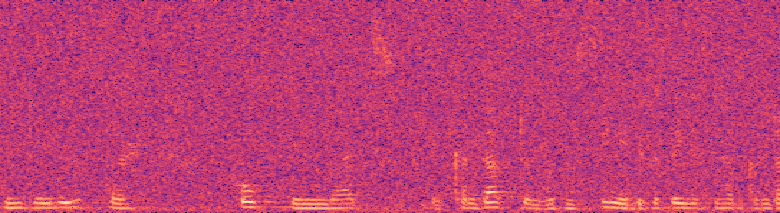
SpeechTokenizer
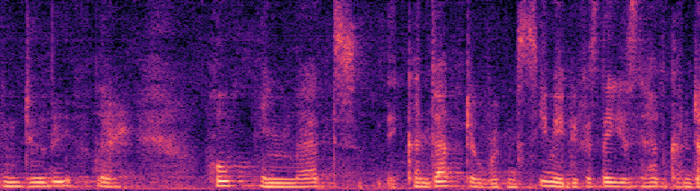
DAC
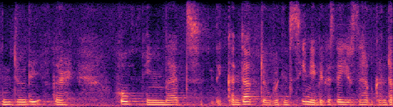
AcademiCodec
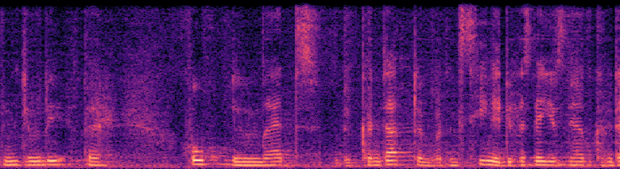
Additional PnP variant
PnP-Gaussian
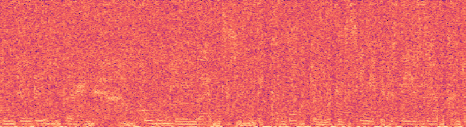